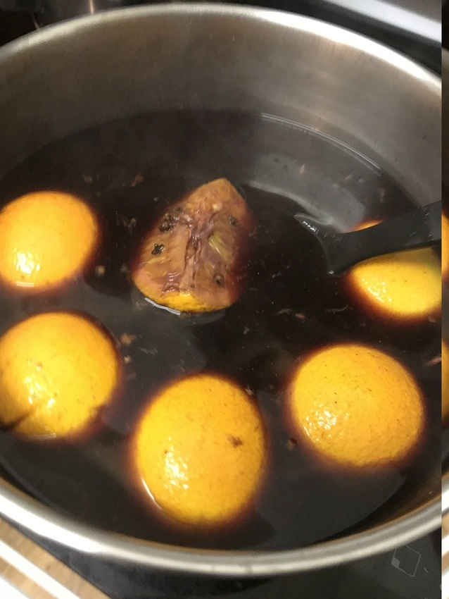

glühwein (Mulled Wine)
Awesome in winter if you are having people over. The fruit makes it sweet so don’t buy expensive wine.

3 bottlescheap red wine10cloves2cinnamon sticks1/4 cupsugar1grated nutmeg2 cupswater2cut up oranges
Combine cheap red wine , cloves, cinnamon sticks, sugar grated nutmeg water cut up oranges in large pot
warm to low to medium heat (avoid boiling!) serve with ladle into mugs